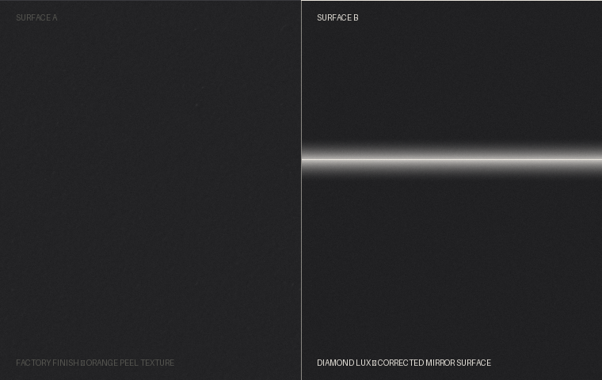

Vehicle Preservation · Sydney
Specialist paint correction and texture leveling for collectors, purists, and owners of exceptional vehicles. Not detailing — a different discipline entirely.
Bespoke Paint Correction
—
We hold one standard. Every vehicle is assessed against it. The work is whatever it takes to get there.
Diamond Lux · Sydney
The Problem — 01
Even the finest factory finishes carry a flaw invisible to the untrained eye. Orange peel — the microscopic undulation baked into every panel at the paint line — distorts light, breaks reflections, and places a ceiling on what any coating can achieve.
"Most detailers polish until it shines — texture and all.
We correct what the paint actually needs. Then we seal it."
Standard Finish
Diamond Lux
What We Do — 02
Paint Correction
Stage-by-stage defect removal at the microscopic level. Every swirl, scratch, and contamination addressed before any coating is applied.
Ceramic Coating
A 9H-rated ceramic shield bonded to a corrected surface. Not applied over imperfection — a finish that earns it first.
Texture Leveling
Orange peel is the flaw factory paint hides. Wet-sand texture leveling eliminates it permanently — the reflections speak for themselves.
How It Works — 03
Paint Assessment
We gauge every panel, document every defect, and write a complete proposal before any work begins. No assumptions. No surprises.
Correction
Stage-by-stage paint correction. Texture leveling where the surface demands it. Preparation done at the level the vehicle requires.
Protection
Ceramic coating applied to a surface that is ready for it. Sealed, documented, and returned to the owner.
The Difference — 04

Surface comparison: factory finish vs. texture-leveled and corrected paint. The difference is measurable before it is visible.
"The depth of the paint after treatment is in a different category."
Daniel R. · Mercedes-AMG C63 · Multi-Stage Paint Correction
One Standard. Every Vehicle.
The assessment is where it begins. We inspect the paint, map every panel, and tell you exactly what it takes to reach our standard. No packages. No pressure. Just an honest evaluation and a proposal built around your vehicle.
Sydney · Limited Intake Monthly